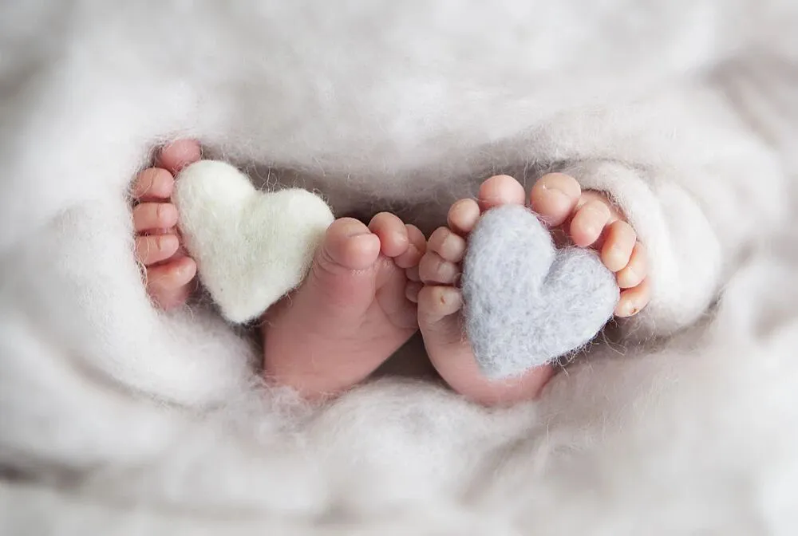
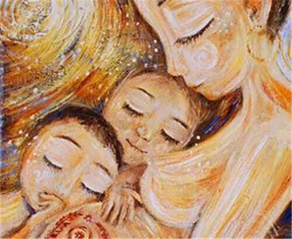
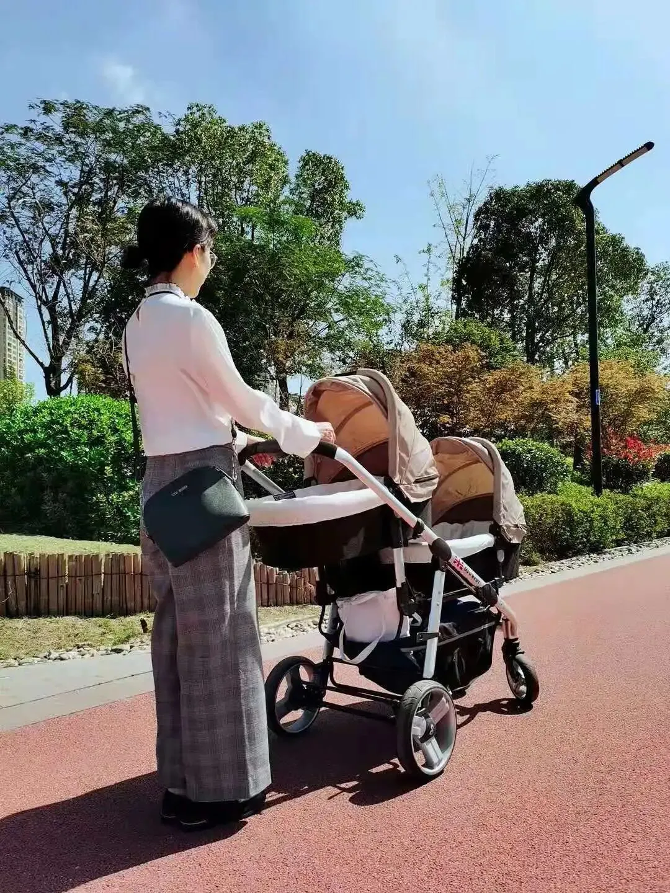

孖仔帮
公众号ID：twinsbang
关注
文|格雷斯麻麻
网图|侵删
插播一则群通知：第5期双胞胎跳蚤市场群已开放，公号输入“赶集5”，扫码即可入群。
【帮主】圆圈妈妈：生了对龙凤胎，几乎所有人的反应都是：哇晒，一胎搞定人生两件大事，有儿有女，人生圆满。
我在想，其实何谓人生圆满？
也许，对于有些人来说，有儿有女是其次，更重要的是，在育儿路上一番摸滚带爬之后还能保持追梦的力量，坚守梦想，成就更完美的自己。
这是孖仔帮双胎专栏【孖妈来了】的第13篇文章，是一位高龄双胞胎妈妈的投稿，今年8月，她喜得龙凤胎兄妹一对，养育双胞胎的酸甜苦辣个中滋味，她都尝了个遍。
这篇是她成为双胞胎妈妈后的所想所得所感，必定也有你成为妈妈后依然追梦的影子，一起来找找共鸣吧！
【格雷斯麻麻@Grace Yang】：今年8月的某天，我的剖腹产手术原本安排在中午进行。在医院经历了数次被护士“打劫”的一晚，总是在睡得迷迷糊糊时，护士突然推门进来，用一把额温枪对着脑门就是一下
（圆圈妈妈备注：不要介意，这是全国护士统一通用的“扫一扫”）
早上起来我还在微信上慢条斯理和同事联系工作事宜，突然被通知手术即刻开始。被推进手术室时是上午9点整，23分钟后，兄妹俩相继出生。
来不及感慨现代医学的伟大，护士就把两小只快速的拿到我眼前确认性别，说来惭愧，因为没戴眼镜，我本能的躲了躲。
然而比这更懵圈的是，B超确认我怀了双胞胎的那一刻。
之前我和老公商量只想要一个孩子，这突如其来的消息让人措手不及，既然是缘分，就要认真迎接两个小生命的到来。
1. 怀孕遇上疫情年
记得B超确认胎芽胎心的第二天，本地发现确诊病例，第二天一早公司宣布在家办公，我开车去拿回电脑，做好长期在家办公的准备。过年完全没有气氛，我和老公有种相依为命的感觉；孕反吃不下饭，格外怀念家乡的味道。
比这更难熬的是，口罩难买，家门难出，建卡无望，担心疫情。
既然必须接受现实，我就在家里积累知识，购买了孕期课程，看了相关书籍，适当的运动，囤孕期需要的护肤品和用品。
双胎加高龄，何以化解焦虑？只有提前做好功课。
不得不说，孖仔帮公众号给了我很大的安慰和鼓励：有篇文章是统计双胞胎早产率的，让我对37周生产充满信心；有姐妹们分享分娩过程，让我坚信有人一路同行，做好心理准备。
《线上活动|你家的双胞胎几周出生》
《调查结果出炉|双胞胎真实的出生孕周》
不知是体质好，备孕期间坚持艾灸泡脚运动，还是运气好，一路产检还算顺利。当然，也不免有幺蛾子的时候，如四个月时短暂水肿并耻骨疼，六个月流血一周吃保胎药，生之前的一个月脚面水肿不下，走路困难。
怀孕虽然辛苦，但眼见身体一天天的变化，积累的孕期知识没有浪费，很有成就感。
为了防止早产，我严格控制体重，37周生产时，只增长了20斤，出院后几天就比怀孕前体重轻了。
自己的身体，姑且还能自己决定，有了孩子，一切就不那么可控了。等待小生命的几个月中，我时常在想，孩子的降临会彻底改变我的生活吧？既期待又担忧，我还可以做我自己，而不仅仅是他们的妈妈吗？
2. 难怪会有产后抑郁一说
因为调整了剖腹产时间，进手术室时，家人还在赶来的路上，只有老公在门外焦急等待。出手术室时，护士没及时通知，导致无人守候，我一个人和脚下的儿子（女儿因为体重不足五斤，被送至儿童病房观察）被孤零零推回病房。
从那一刻起，我深知，操劳即将开始。
双胎婴儿各方面指标不比单胎，需要格外留心。护士们每天查房数次，说儿子心跳快，要把小家伙送到新生儿病房。
女儿已经不在身边了，儿子若再被送走，我伤心不已，好说歹说，答应第二天心跳速度还是不降，再送走。
妈妈和老公轮流照看着，大家的注意力都在儿子身上，后来妈妈才意识到我还在月子中，也需要有人关怀。
所谓的产后抑郁，应该就是家人的注意力全部在孩子身上，产妇遭遇身体上虚弱的同时，还得承受心里上的失落吧。
而我，提早做好准备，让家人第一时间送了陈皮水，手术后几小时就排气了。护士压肚子，愣是一声没出；自己在床上尽量翻身，多活动。
家里一下子多了两个小娃，有人帮我分担照料，也是极好的，我还是尽量自食其力吧。
在此强烈呼吁：给产妇多一点关爱。毕竟，这是我们人生的一个小低谷，那种身体上的痛，以及小生命降临后的猝不及防，足可以摧毁一个人。
3. 鸡飞狗跳的家庭关系
这几个月我时常在想，和婆婆初次见面，多美好；不知道何时开始，就相见不如怀念了。
我妈常安慰我说，你不是人家身上掉下来的肉，就像我对你要比对我女婿好一样。
可我还是气不过，比如...
她从来没有问候过我身体恢复得如何；
月子里更不会弄点我喜欢吃的东西；
我哄孩子吃饭晚，她从来不会谦让，反而会抢着吃；
她给孩子换尿布，会旁敲侧击的说“应该妈妈给你换”（我正在月子里，弯腰困难）；
嘱咐她带孩子的注意事项，她永远表面答应，然后按照自己的方式来。
...
过去，二人世界，我可以躲得远远的，如今，不得不同在一屋檐下共同养育孩子，我被无穷无尽的无奈和焦虑包裹着，快要崩溃了。
近距离的接触，让我从老公身上看到很多婆婆的影子，也许是激素作用，我开始担心我的孩子们将来也会如此；而猪队友也没有像我一般快速进入为人父母的角色，加上有老人的帮衬，依旧过着以往的生活。
养孩子，母亲的付出的确更多些。我给自己打气，不能被击垮！为母则刚，我要改变！
我每个月咨询心理医生，尽可能自我调节情绪。照料孩子的同时，我不断和老公沟通，需要步调一致统一战线，让他跟我一起承担起家庭的责任。
家里的安排也要花些心思，适当运用工作中的管理技巧。起初的两个月，父母公婆共同帮忙，人多事杂，难免纷争。
每晚半夜吸奶，我都在冥思苦想解决方案，最终制定一个值日表，让俩妈单独带娃，另一方有自己的空间，避免冲突，皆大欢喜。这让我喜出望外，原来合理的安排和统筹，是可以事半功倍的。
过去，我有些洁癖，也比较自立，如今卧室门时常被推开，乱糟糟的床，犹如我目前的处境：一地鸡毛，满园鹅粪。
安排了轮班制后，我开始有了自己的时间看书和整理，买了一个床盖，白天铺在床上，晚上换睡衣钻进干净的被窝。
我自嘲，床盖是我最后的倔强。
4. 一关一关地闯
孩子的降临，是故事的开始。
伴随着宝宝们的成长，各种之前没接触过的名词相继出现，比如黄疸、淹脖子、红屁股、湿疹、乳糖不耐受、肌张力高、结膜炎...这些都是我的孩子们经历过的。
而我，要不断的寻医问药，化解困难,有时候焦急得难以入眠，好在这些难关都一步步闯过来了，这就是成长，和孩子们一起。
双倍辛苦，双倍快乐。
我知道接下来还会有各种难题，但我相信解决的过程也是一种体验，我会提前多学习多向别人讨教，跟孩子们一起面对。
我时常在想，我们给与孩子的究竟是什么呢？是吃饱穿暖满足需求，还是填鸭式的压力教育？也许从出生那一刻起，教育就已经开始了。
是不是有足够的耐心化解孩子的哭闹，而不是图省事一哭就喂，不顾孩子的脾胃；是不是在哄睡的时候一鼓作气，告诉他们该睡则睡，而不是无意中又吸引了宝宝的注意力；是不是合理安排作息，让他们养成良好的习惯，而不是散漫。
总之，养娃育儿的学问很大，哪种方式未必绝对，但我不希望将来悔不当初。
双胞胎共同成长，四个月就已经展现出争宠的天性，对于父母来说，一碗水如何端平更是学问，在孩子们成长的过程中，我也在思考自己的处世哲学。
5. 敏感了感性了
咱们这代人，背井离乡，因上大学留在了另外的城市，难得与父母相处，突然有这么长时间和父母在一起，也是幸福的事。
生娃后，突然发现这个世界上最疼自己的永远是父母。妈妈会在照顾宝宝之余，替我多分担；爸爸会变着法儿给我做好吃的。
不得不说，没有爸爸妈妈的帮助，我不会恢复得那么快。他们看我辛苦，尽量帮我带孩子，留心观察及时发现和解决问题；一把年纪还经常扒育儿视频看，学习如何带娃。
真的很感谢他们！
我有时会想，等孩子长大了，父母就老了，想着想着，不禁潸然泪下，我们都该活在当下，懂得珍惜！
6.关于我自己
格雷斯麻麻与龙凤胎兄妹▲
双胞胎孩子们的到来，影响和改变着我的生活。
辛苦是自然的，但凡事有利有弊，我也在逐渐克服拖延症和洁癖。每次给孩子们买用品，带他们出门收获超高回头率，我也会沉浸在拥有龙凤胎的喜悦中。
这几个月的产假，我有时做做产后修复的动作，看看书，复习了两个月功课，参加了一门考试，时间在孩子们的哄睡、喂奶和陪玩中，无意识的划过。
对于我们双胞胎妈妈，在对抗睡眠不足的同时，合理利用时间太重要了，每次看到老公在进步，我想我也得更加努力。
现在有爸妈暂时在帮忙照顾着，我才得以抽空出去和朋友吃饭喝茶，以及偶尔去下公司，处理工作的事情。
眼下马上要上班了，父母也要暂时回老家，人手少，还要与公婆朝夕相处，是个新问题。
但这就是生活吧，挺过去，加油！
我希望，除了带娃，宝宝们可以看到一个努力生活热爱工作的妈妈，相信这种身教的力量要远远大于单纯的言传。
我希望，我是龙凤胎的妈妈，但更是我自己！
-END-
作者/格雷斯麻麻@Grace Yang
排版/圆圈妈妈
写手招募
如果你是爱分享的双胞胎爸爸或妈妈
欢迎投稿至孖仔帮【双胎专栏】
分享出你和双胞胎的成长故事
添加小助手微信sgguy-com
备注“投稿”
今日互动话题
#双胞胎出生后，你的梦想还在吗？#
评论区聊一聊呗！
微信公众号：孖仔帮
ID : twinsbang
专注双胞胎孕育，养育，教育经验分享
扫码关注我们
点一下你会更好看耶



